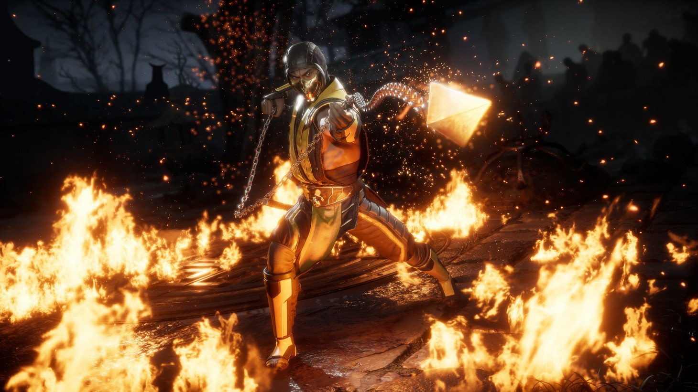
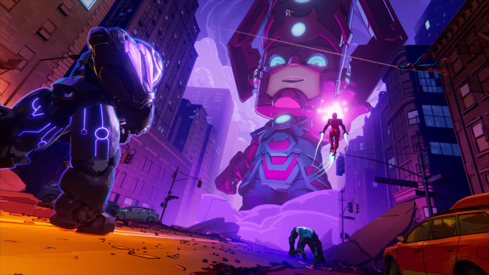

In the early '90s, the fighting game genre was a far cry from what it is today. Inspired by series like Final Fight, Kung-Fu Master, and Karate Champ, the fighting genre emerged in arcades, buoyed by a few significant players in the space. One of those franchises was Mortal Kombat, a bloody, gory fighting game that took concepts from other fighting games and dialed them to 11. The series became notorious for its spine-ripping, heart-grabbing, limb-chopping action, but beneath the controversies and the hearings was a technically sound, capable fighting game.
The Mortal Kombat franchise has continued to grow and evolve, showcasing massive staying power in a sometimes ruthless industry. Now, 30 years into the series' existence, Mortal Kombat has proven it's here to stay as one of the preeminent players in the fighting game space. We caught up with series co-creator Ed Boon to talk about the series' bloody roots, its fascinating evolution, and its current status as one of the industry's heavy hitters.
At the end of the day, I think you could think of it as it was four guys in their 20s, completely inspired by action movies of the '70s, '80s, and '90s, and just mashing up all of those ideas and "Wouldn't it be cool" moments into a fighting game, let loose and basically allowed to do what they wanted to do. You know, four guys in their 20s making a game, and nobody's telling them what to do. That's the result of what Mortal Kombat is.

You'll need to log in to your GI account and click "okay to print" for your letter or question to go through. We'd also love it if you included your location (city, state, or country will do). We'll look through the questions and pick a few to include in our next issue, which releases on November 8.
For each issue, we ask our community a question for our SoundOff section. This time around, we want to know...
You can answer this question and/or include any other feedback you want. Thank you again for your support throughout the years, and we hope many of you get the chance to have your letter printed in an upcoming issue!

I’m extremely picky with my mobile games. Since its launch in 2019, Apple Arcade has spoiled me so thoroughly with its beautifully crafted, ad-free experience that it’s hard to go back to anything else. To my surprise, this month saw the release of a game that fits both of these criteria: Marvel Snap. I downloaded it a few days ago and haven’t put it down since.
Marvel Snap is a free-to-play deck-builder with very short matches (usually only three to four minutes). As you play, you collect cards adorned with Marvel characters, each with a unique ability. Characters range from mainstream heroes like Hulk and Iron Man to ones I’ve never even heard of, like Ka-Zar or Blue Marvel. At only 12 cards, decks are relatively small, so every character counts. The app is named for the Snap mechanic, which allows you or your opponent to double down at any point during the match. If you win, you get twice the cubes, the currency you use to increase your competitive rank. If you snap and lose, your rank will decrease instead, creating a delicious risk/reward system.
In a game, you play your cards at one of three iconic Marvel locations, each with a different gameplay modifier. For example, Kamar-Taj allows certain card abilities to trigger twice, Fisk Tower destroys any card that moves there, and the Gamma Lab turns every card into the Hulk. Between the dozens of locations and the vast number of cards, Marvel Snap has so many variables that much of the joy of playing comes from seeing what’s going to happen in any given match. I can never predict what will happen the next time I play, and that curiosity is what makes the game so engaging.